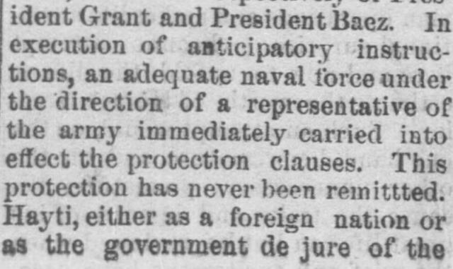

 See the full pageVer la página completa
See the full pageVer la página completa
Execution of anticipatory instruc tions, an adequate naval force under theEjecución de instrucciones anticipadas, una fuerza naval adecuada bajo el
The newspaper reported that following an election held in Dominica in March 1870 regarding a treaty under President Baez, returns indicated general approval, though the process involved intimidation, military force, the expulsion of citizens, and threats of banishment against those who opposed the treaty. It also noted that an adequate naval force and army representative had previously carried out protection clauses that were never remitted, while Hayti remonstrated against it.El rotativo consignó que, tras la consulta electoral celebrada en Santo Domingo en marzo de 1870 sobre el tratado bajo la égida del presidente Báez, los escrutinios arrojaron una adhesión generalizada, si bien el proceso estuvo plagado de intimidaciones, despliegue castrense, expulsión de ciudadanos y amenazas de proscripción para quienes objetaran el pacto. Se destacó asimismo que una nutrida escuadra naval y delegados militares velaron por el cumplimiento de las cláusulas protectoras sin interrupción, en medio de las enérgicas quejas elevadas por Haití.
FULL TEXT:TRADUCCIÓN:
The annexation of the eastern portion of Santo Domingo, known as Dominica, and formerly a colony of Spain, was very actively discussed by the public and Congress. The following are the facts of the early negotiations and treaties: Two treaties between the governments of the United States and Dominica were signed. The first was known as the Samana treaty. By this Dominica cedes the entire domain of the district described therein, which includes the Peninsula and Bay of Samana, for a term of fifty years, reserving the free navigation, for an annual rental of $15,000 gold. Four months are stipulated for ratification, during which the United States protects Dominica from foreign intervention. One year's rent was paid down, and possession duly taken.La anexión de la porción oriental de Santo Domingo, conocida como Dominica, y antiguamente una colonia de España, fue muy activamente discutida por el público y el Congreso. Los siguientes son los hechos de las negociaciones y tratados iniciales: Se firmaron dos tratados entre los gobiernos de los Estados Unidos y Dominica. El primero fue conocido como el tratado de Samaná. Por este Dominica cede todo el dominio del distrito descrito en él, que incluye la Península y la Bahía de Samaná, por un término de cincuenta años, reservando la libre navegación, por una renta anual de $15,000 en oro. Se estipulan cuatro meses para la ratificación, durante los cuales los Estados Unidos protegen a Dominica de la intervención extranjera. Un año de renta fue pagado por adelantado, y la posesión fue debidamente tomada.
The second, known as the annexation treaty, provides for a renunciation of sovereignty in favor of the United States, and that the Dominican Republic be incorporated on the footing of a territory, eligible to admission into the Union in the discretion of Congress. Dominica cedes her property, as specified in a schedule, but reserves all other property not scheduled; delivery not to be made nor consideration paid until Congress shall have appropriated the money. This is $1,500,000 in gold; and is in consideration of property only. Its disposition is provided for—Dominica is to apply it to her debts. But the application is to be made by a commission which the United States is to respect and protect, to be appointed by those who at the signing of the treaty constituted the present actual Dominican Government. For all debt, liquidated and unliquidated, in excess of such sum, public bonds of Dominica shall stand as security; likewise all the public lands and other property reserved from cession. After the execution of the treaty no grants or concessions of lands, or of rights in lands, were to be made, or any debt contracted. Franchises other than those are not prohibited. It is also agreed that the United States is in no event liable for Dominican debts or obligations. The cession was not to be valid unless ratified by a vote of the people.El segundo, conocido como el tratado de anexión, dispone una renuncia de soberanía en favor de los Estados Unidos, y que la República Dominicana sea incorporada sobre el pie de un territorio, elegible para admisión en la Unión a discreción del Congreso. Dominica cede su propiedad, según se especifica en un inventario, pero reserva toda otra propiedad no inventariada; la entrega no se hará ni la consideración se pagará hasta que el Congreso haya asignado el dinero. Esto es $1,500,000 en oro; y es en consideración solo de la propiedad. Su disposición está prevista—Dominica ha de aplicarlo a sus deudas. Pero la aplicación ha de hacerse por una comisión que los Estados Unidos han de respetar y proteger, a ser nombrada por quienes al firmarse el tratado constituían el actual Gobierno dominicano. Por toda deuda, liquidada y no liquidada, que exceda de tal suma, los bonos públicos de Dominica servirán de garantía; igualmente todas las tierras públicas y demás propiedades reservadas de la cesión. Después de la ejecución del tratado no se harían concesiones ni franquicias de tierras, ni de derechos en tierras, ni se contraería deuda alguna. Las franquicias distintas de esas no están prohibidas. También se acuerda que los Estados Unidos en ningún caso son responsables de las deudas u obligaciones dominicanas. La cesión no sería válida a menos que fuera ratificada por un voto del pueblo.
Both treaties were signed at the city of Santo Domingo November 29, 1869, on behalf respectively of President Grant and President Baez. In execution of anticipatory instructions, an adequate naval force under the direction of a representative of the army immediately carried into effect the protection clauses. This protection has never been remitted. Hayti, either as a foreign nation or as the government de jure of the whole island, as they claim, ostensibly remonstrated.Ambos tratados fueron firmados en la ciudad de Santo Domingo el 29 de noviembre de 1869, en nombre respectivamente del presidente Grant y del presidente Báez. En ejecución de instrucciones anticipatorias, una fuerza naval adecuada bajo la dirección de un representante del ejército llevó a efecto inmediatamente las cláusulas de protección. Esta protección nunca ha sido retirada. Haití, ya como nación extranjera o como el gobierno de jure de toda la isla, según reclaman, ostensiblemente protestó.
In March, 1870, the result was received of an election held in Dominica during a fortnight, beginning under a decree of President Baez and his Senate, dated February 16, 1870. The returns indicated a general approval of the treaty. About eighty days, however, had intervened before an election was found "possible." In appropriate localities an official registry was opened, in which citizens were invited to inscribe their suffrages. On the first day of opening the polls a citizen recorded himself in the negative. He was seized on the spot and sent out of the city by the military guard, present in strong force. Several, afterwards expelled from the country by President Baez, found refuge from violence in the house of the Italian consul. President Baez, in presence of the commercial agent of the United States, threatened influential citizens with banishment if they opposed the treaty, and frequently expressed the like intolerance.En marzo de 1870, se recibió el resultado de una elección celebrada en Dominica durante una quincena, comenzando bajo un decreto del presidente Báez y su Senado, fechado el 16 de febrero de 1870. Los resultados indicaron una aprobación general del tratado. Unos ochenta días, sin embargo, habían intervenido antes de que una elección se encontrara «posible». En localidades apropiadas se abrió un registro oficial, en el cual los ciudadanos fueron invitados a inscribir sus sufragios. El primer día de apertura de las urnas un ciudadano se registró en la negativa. Fue apresado en el acto y enviado fuera de la ciudad por la guardia militar, presente en fuerte número. Varios, expulsados después del país por el presidente Báez, encontraron refugio de la violencia en la casa del cónsul italiano. El presidente Báez, en presencia del agente comercial de los Estados Unidos, amenazó a ciudadanos influyentes con el destierro si se oponían al tratado, y frecuentemente expresó la misma intolerancia.
The unanimity thus obtained was so suspicious as to require negative votes by invitation. The Dominican President habitually declared the dependence of his authority upon that of the United States in force, and said that the death or expulsion of himself and his cabinet could be averted only by this annexation.La unanimidad así obtenida era tan sospechosa que requirió votos negativos por invitación. El Presidente dominicano declaraba habitualmente la dependencia de su autoridad de la de los Estados Unidos en vigor, y decía que la muerte o expulsión de él mismo y su gabinete solo podría evitarse por esta anexión.
The public property of Dominica in the main was to be left to her, with the corresponding burden of her own debts and liabilities, necessarily, without prejudice to third parties. Encumbrances then became matter of essential consequence. Beyond the fact that they were large, only the most obscure and meagre data were before the United States government concerning them previous to the report of the commissioners. A person named Fabens, resident in Dominica, made, as agent of the United States, a report placing the aggregate at $600,000. With some additions since it has been reckoned at some millions. It was reported that mortgages of enormous scope, grants of public lands—of which a single one to Fabens absorbed one-fifth—perpetual navigation and commercial franchises and other monopolies, mining right, banking privileges, right to valuable woods, guano, &c., land grants and charters for railroads, for immigration societies, &c., existed; and thus there was excited the belief that by way of grant or lien all the appropriable resources of the country have fallen under private control.La propiedad pública de Dominica en lo principal había de quedarle a ella, con la carga correspondiente de sus propias deudas y responsabilidades, necesariamente, sin perjuicio de terceros. Las cargas se volvieron entonces asunto de consecuencia esencial. Aparte del hecho de que eran grandes, solo los datos más oscuros y escasos estaban ante el gobierno de los Estados Unidos concernientes a ellas antes del informe de los comisionados. Una persona llamada Fabens, residente en Dominica, hizo, como agente de los Estados Unidos, un informe que fijaba el total en $600,000. Con algunas adiciones desde entonces se ha calculado en algunos millones. Se informó que hipotecas de enorme alcance, concesiones de tierras públicas—de las cuales una sola a Fabens absorbía una quinta parte—franquicias perpetuas de navegación y comercio y otros monopolios, derechos mineros, privilegios bancarios, derechos a maderas valiosas, guano, etc., concesiones de tierras y cartas para ferrocarriles, para sociedades de inmigración, etc., existían; y así se excitó la creencia de que por vía de concesión o gravamen todos los recursos apropiables del país han caído bajo control privado.
Subsequent to the signing of the treaty grants and concessions of every description were solicited of the Dominican government, against zealous remonstrances of their regular United States diplomatic agent, made without encouragement from Washington. The President, on sending the report of the commissioners to Congress, accompanied it with a message, in which he took strong ground for annexation, but, as is well known, without success.Posteriormente a la firma del tratado se solicitaron del gobierno dominicano concesiones y franquicias de toda descripción, contra las celosas protestas de su agente diplomático regular de los Estados Unidos, hechas sin estímulo alguno de Washington. El Presidente, al enviar el informe de los comisionados al Congreso, lo acompañó de un mensaje, en el cual tomó una posición fuerte en favor de la anexión, pero, como es bien conocido, sin éxito.
[Editor's note: the paper writes of the east as part of Hayti. From 1822 to 1844 the Dominican Republic was held by Haitian military occupation, against its people's will; it restored its independence on February 27, 1844.][Nota del editor: el periódico habla del este como parte de Haití. De 1822 a 1844 la República Dominicana estuvo bajo ocupación militar haitiana, contra la voluntad de su pueblo; restauró su independencia el 27 de febrero de 1844.]
The Fremont Weekly Journal. Fremont, Sandusky County, Ohio, December 13, 1872.
See the original at the Library of CongressVer el original en la Biblioteca del Congreso
Published by: Wilcox & Greene, -1877.Publicado por: Wilcox & Greene, -1877.
Edition: Edition 1Edición: edición 1
Page: 2Página: 2
Frequency: weekly (1867–1877)Frecuencia: semanal (1867–1877)
Collection: Chronicling America, Library of CongressColección: Chronicling America, de la Biblioteca del Congreso
LCCN: sn85038229LCCN: sn85038229
ISSN: 2327-4832ISSN: 2327-4832
OCLC: 11944469OCLC: 11944469
Rights: public domain, according to the Library of CongressDerechos: dominio público, según la Biblioteca del Congreso